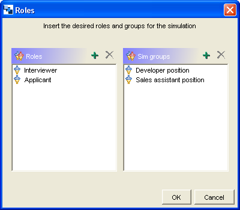

Guidelines for particularization, instantiation and execution
Particularization/customization of the pattern into a Learning Design:
- During particularization, several tasks should be performed: determination of the number and name of roles and simulation small groups; this is done after this CLFP is chosen:

- Then, definition of objectives and prerequisites of the Learning Design, specification of each (teachers’ and learners’) activity description (definition of situations to be simulated with the same roles), provision of necessary resources (contents and tools), and decisions about completion of activities (e. g. control of time).
Instantiation of the Simulation CLFP-based Learning Design:
- During instantiation, several tasks should be performed: binding persons to roles and simulation groups.